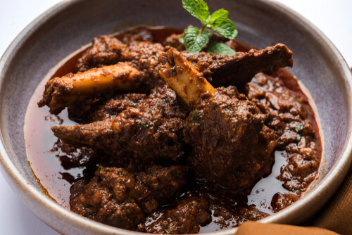

Mutton Masala
home

Description
Mutton Masala is both a popular Indian spice blend specifically designed to complement goat meat and the name of the rich, aromatic curry made using these spices.
Ingredients
- Mutton: 500g – 1kg
- Yogurt (Curd): 1 cup.
- Ginger-Garlic Paste: 2 tablespoons.
- Turmeric Powder: 1 teaspoon.
- Red Chilli Powder: 2 teaspoons.
- Salt
- Oil or Ghee: 2–3 tablespoons.
- Cinnamon Stick: 1–2 sticks.
- Cardamom Pods: 3–4 pods.
- Cloves: 4 pods.
- Bay Leaf: 1–2 leaves.
- Onions: 2–3 large (finely chopped).
- Tomato Puree or Chopped Tomatoes: 1 cup or 3 medium tomatoes
- Coriander Powder: 2 teaspoons.
- Cumin Powder: 1 teaspoon.
- Garam Masala: 1 teaspoon.
- Fresh Coriander: A handful (for garnish).
Steps
- Marinate the Mutton:In a large bowl, combine the mutton pieces with yogurt, ginger-garlic paste, turmeric, red chilli powder, and salt. Let it rest for at least 30 to 60 minutes (or overnight in the fridge) to tenderize the meat.
- Sauté Whole Spices & Onions:Heat oil or ghee in a pressure cooker or heavy-bottomed pan. Add the cinnamon, cardamom, cloves, and bay leaf. Once they become fragrant (about 30 seconds), add the chopped onions. Sauté until the onions turn golden brown.
- Brown the Meat:Add the marinated mutton to the pan. Cook on high heat for 5–7 minutes, stirring occasionally, until the meat changes colour and is seared on all sides.
- Add Gravy Aromatics:Stir in the tomato puree (or chopped tomatoes), coriander powder, cumin powder, and garam masala. Cook for another 5 minutes until the tomatoes soften and the oil starts to separate from the masala.
- Pressure Cook:Add approximately 1–2 cups of water (adjust for desired gravy thickness). Close the lid and pressure cook for 4–6 whistles (about 20–25 minutes) or until the mutton is tender and "falling off the bone".
- Finishing Touches:Once the pressure releases naturally, open the lid. If the gravy is too thin, simmer it uncovered for a few minutes to thicken. Garnish generously with fresh coriander leaves.